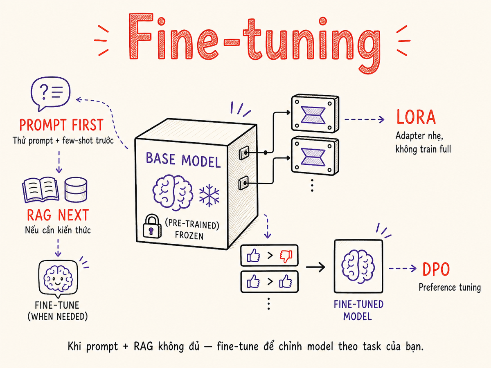

Fine-tuning & Customization
Khi nào nên fine-tune, khi nào không — và nếu fine-tune thì dùng phương pháp nào: SFT, LoRA, QLoRA, hay instruction tuning. Cộng với quantization và distillation để deploy hiệu quả.

6.1 Khi nào Fine-tune vs Prompt vs RAG
Fine-tuning là tool mạnh nhưng tốn kém và phức tạp. Nguyên tắc vàng: chỉ fine-tune khi prompt và RAG không đủ. Decision tree sau giúp bạn chọn đúng approach:
Khi nào fine-tune thực sự có ích
| Situation | Approach phù hợp | Lý do |
|---|---|---|
| Cần format/style nhất quán (tone of voice) | Fine-tune | Prompt không đủ consistent ở scale |
| Domain-specific vocabulary/knowledge cố định | Fine-tune hoặc RAG | Tùy knowledge có update thường xuyên không |
| Cần giảm latency + cost ở scale lớn | Fine-tune small model | Small fine-tuned model > large general model |
| Knowledge thay đổi thường xuyên | RAG | Fine-tuning không scalable với dynamic data |
| Prompt engineering đủ tốt | Prompt | Fine-tune là over-engineering |
6.2 Supervised Fine-tuning (SFT)
SFT là phương pháp fine-tuning cơ bản nhất: train model trên tập dữ liệu (input, expected output) đã được label. Model học cách map input → output theo distribution của training data.
Quá trình SFT
- Chuẩn bị dataset: 500–10,000 examples (instruction, response) pairs. Quality quan trọng hơn quantity.
- Chọn base model: Llama 3, Mistral, Gemma — model mạnh làm base tốt hơn.
- Training: Fine-tune với supervised loss (cross-entropy) trên response tokens. Thường chỉ compute loss trên output, không phải instruction.
- Evaluation: Hold-out eval set + LLM judge để measure improvement.
# Cấu trúc training data cho SFT (Alpaca format)
{
"instruction": "Tóm tắt email sau bằng tiếng Việt, tối đa 2 câu.",
"input": "Subject: Q4 Budget Review\n\nDear team, ...",
"output": "Email yêu cầu team review ngân sách Q4 trước ngày 30/11. Cần điền form đính kèm và gửi về cho finance team."
}
# Hoặc chat format (phổ biến hơn)
{
"messages": [
{"role": "system", "content": "Bạn là trợ lý tóm tắt email chuyên nghiệp."},
{"role": "user", "content": "Subject: Q4 Budget Review\n..."},
{"role": "assistant", "content": "Email yêu cầu team review ngân sách Q4..."}
]
}SFT dạy model cái gì để output, nhưng không dạy model biết cái gì tốt hơn. Nếu cần alignment với human preference → cần preference tuning (DPO/ORPO).
6.3 LoRA / QLoRA / PEFT
Full fine-tuning một model 7B+ tốn hàng chục GB VRAM và hàng giờ training. Parameter-Efficient Fine-Tuning (PEFT) giải quyết vấn đề này bằng cách chỉ train một phần nhỏ parameters.
LoRA rank và alpha
# LoRA với Hugging Face PEFT
from peft import LoraConfig, get_peft_model
lora_config = LoraConfig(
r=32, # rank — 32–64 cân bằng capacity/stability (2025+)
lora_alpha=64, # scaling factor (thường = 2*r)
target_modules=["q_proj", "v_proj"], # attention layers
lora_dropout=0.05,
bias="none",
task_type="CAUSAL_LM"
)
model = get_peft_model(base_model, lora_config)
model.print_trainable_parameters()
# trainable params: 4,194,304 || all params: 6,742,609,920
# trainable%: 0.0622% — chỉ train 0.06%!| Method | Params updated | VRAM (7B model) | Quality vs full FT | Khi nào dùng |
|---|---|---|---|---|
| Full Fine-tune | 100% | ~80–160 GB | Baseline (best) | Có GPU farm, budget lớn |
| LoRA | 0.1–1% | ~20–30 GB | ~90–95% của full FT | 1–4 GPU, tiêu chuẩn |
| QLoRA | 0.1–1% | ~8–12 GB | ~85–92% của full FT | Consumer GPU (RTX 3090+) |
| DoRA | 0.1–1% | ~22–32 GB | ~92–96% của full FT | Cần quality cao hơn LoRA |
| QDoRA | 0.1–1% | ~8–12 GB | ~88–94% của full FT | Best quality/VRAM tradeoff (2025+) |
| IA³ | <0.01% | ~6 GB | ~80–88% của full FT | Rất ít data, fast exp |
| Prefix Tuning | <0.1% | ~8 GB | ~85–90% của full FT | Task switching nhanh |
DoRA (Weight-Decomposed LoRA) phân tách weights thành magnitude và direction components, giúp học tốt hơn LoRA ở cùng số params. QDoRA = DoRA + 4-bit quantization (best of both worlds). Nghiên cứu 2025 cho thấy QDoRA outperform cả QLoRA và full fine-tuning trên nhiều benchmarks trong cùng VRAM budget. Rank khuyến nghị 2025: dùng r=32–64 thay vì r=8 để đạt capacity/stability tốt nhất.
6.4 Instruction Tuning vs Preference Tuning
Instruction Tuning (SFT)
Dạy model follow instructions — respond theo cách được mong đợi.
- Data format: (instruction, response) pairs
- Model học: "khi thấy instruction này, output như thế này"
- Dùng khi: cần model biết format, style cụ thể
- Tools: HuggingFace TRL SFTTrainer
Preference Tuning (DPO/ORPO)
Dạy model align với preference của human — biết cái gì tốt hơn cái gì.
- Data format: (prompt, chosen_response, rejected_response)
- Model học: "response A tốt hơn response B vì sao"
- Dùng khi: cần alignment, reduce harm, improve helpfulness
- Tools: TRL DPOTrainer, ORPOTrainer
Các phương pháp Preference Tuning
| Method | Reference model? | Data format | Ưu điểm nổi bật | Khi nào dùng |
|---|---|---|---|---|
| DPO | Cần | (prompt, chosen, rejected) | Đơn giản, stable, phổ biến nhất | Baseline — điểm xuất phát tốt |
| SimPO | Không cần | (prompt, chosen, rejected) | Không cần ref model → rẻ hơn; length-normalized reward | Muốn tiết kiệm compute, giảm length bias |
| KTO | Cần | (prompt, response, label) | Không cần paired preferences — chỉ cần binary good/bad | Khi khó thu thập paired preferences |
| IPO | Cần | (prompt, chosen, rejected) | Thêm regularization → giảm overfitting | Dataset nhỏ, dễ overfit |
| ORPO | Không cần | (prompt, chosen, rejected) | Kết hợp SFT + preference trong 1 pass | Muốn train SFT và alignment cùng lúc |
DPO (Direct Preference Optimization)
DPO vẫn là phương pháp phổ biến nhất cho preference tuning — đơn giản hơn RLHF (không cần reward model riêng), stable hơn khi training. Tuy nhiên, SimPO và KTO đang ngày càng được ưa chuộng vì không đòi hỏi reference model, giảm memory footprint đáng kể.
# Cấu trúc DPO training data
{
"prompt": "Giải thích machine learning cho người mới bắt đầu",
"chosen": "Machine learning là cách dạy máy tính học từ ví dụ,
giống như bạn học nhận biết mèo bằng cách xem nhiều ảnh mèo.
Thay vì lập trình quy tắc cứng, ML tự tìm pattern trong data...",
"rejected": "ML là một nhánh của AI sử dụng thuật toán thống kê
để cho phép hệ thống máy tính cải thiện hiệu suất trên
một tác vụ cụ thể thông qua kinh nghiệm..."
}
# "chosen" dễ hiểu hơn, dùng analogy
# "rejected" đúng nhưng quá technical cho người mới6.5 Reinforcement Fine-Tuning (RFT)
Reinforcement Fine-Tuning (RFT) là bước tiến sau SFT và DPO: thay vì học từ demonstration hay preference pairs, model được train bằng reward signal — tương tự cách con người học qua trial-and-error. Phương pháp này đặc biệt hiệu quả để dạy model reasoning, math, và coding.
SFT / DPO
Model học từ examples có sẵn. Bị giới hạn bởi chất lượng data của human annotators.
- Cần nhiều (prompt, good response) pairs
- Model chỉ imitate, không "suy nghĩ"
- Khó cải thiện vượt quality của training data
RFT / GRPO
Model học từ feedback về kết quả. Có thể tự khám phá strategies tốt hơn.
- Chỉ cần verifiable reward (đúng/sai, test pass/fail)
- Model tự sinh nhiều responses và học từ cái tốt nhất
- Có thể vượt quality của training data gốc
GRPO — phương pháp RFT phổ biến nhất 2025
GRPO (Group Relative Policy Optimization) được DeepSeek dùng để train DeepSeek-R1 và hiện là backbone của hầu hết RFT pipelines. GRPO đơn giản hơn PPO: thay vì cần critic model riêng, GRPO so sánh nhóm responses với nhau để ước tính advantage.
# GRPO workflow đơn giản
# 1. Với mỗi prompt, sinh G responses (G = 8–16)
# 2. Score mỗi response bằng reward function
# 3. Tính advantage = (score - mean_score) / std_score
# 4. Update policy để tăng prob của responses có advantage > 0
# Ví dụ reward function cho math task:
def math_reward(response: str, ground_truth: str) -> float:
extracted = extract_answer(response)
if extracted == ground_truth:
return 1.0 # correct
elif is_valid_format(response):
return 0.2 # wrong answer but good format
else:
return 0.0 # completely wrongOpenAI Reinforcement Fine-Tuning API
OpenAI cung cấp RFT API cho o4-mini (reasoning model) — đã GA (Generally Available) từ tháng 5/2025 cho verified organizations. Đây là cách dễ nhất để áp dụng RFT mà không cần tự quản lý infrastructure.
RFT hiệu quả nhất với tasks có verifiable reward: toán học (đáp án đúng/sai), coding (unit tests pass/fail), logic puzzles. Với tasks chủ quan (writing style, tone) thì DPO/SimPO vẫn phù hợp hơn. GRPO hiện được tích hợp vào Axolotl, Unsloth, TRL, và LLaMA-Factory.
6.6 Data Preparation cho Fine-tuning
1000 examples chất lượng cao tốt hơn 100,000 examples kém chất lượng. "Garbage in, garbage out" đặc biệt đúng với fine-tuning — model sẽ học đúng cả những lỗi trong data.
Data quality checklist
- Consistency: format nhất quán — cùng một task phải có cùng cấu trúc response
- Accuracy: responses phải đúng về mặt factual — verify bởi domain expert
- Diversity: cover nhiều phong cách, edge cases, không chỉ common cases
- No leakage: test examples không được xuất hiện trong training set
- Deduplication: duplicate examples gây model overfit vào chúng
- Balanced distribution: không bias về topic, language, difficulty
Pipeline chuẩn bị data
# Bước 1: Thu thập raw data
# Nguồn: logs, expert annotations, synthetic generation
# Bước 2: Deduplication (MinHash)
from datasketch import MinHash, MinHashLSH
def deduplicate_dataset(examples: list[dict]) -> list[dict]:
lsh = MinHashLSH(threshold=0.8, num_perm=128)
unique = []
for i, example in enumerate(examples):
m = MinHash(num_perm=128)
for word in example["output"].split():
m.update(word.encode("utf8"))
if lsh.query(m) == []:
lsh.insert(str(i), m)
unique.append(example)
return unique
# Bước 3: Quality filter (dùng LLM judge)
def filter_quality(example: dict, threshold: float = 4.0) -> bool:
score = llm_judge_score(example["instruction"], example["output"])
return score >= threshold
# Bước 4: Train/val/test split (80/10/10)Dùng GPT-4 / Claude để generate training data cho smaller models là technique phổ biến. Gọi là "distillation via data generation". Cẩn thận: check license — một số provider cấm dùng output để train competing models.
6.7 Quantization
Quantization giảm độ chính xác của model weights từ float32 → float16 → int8 → int4, giúp giảm memory footprint và tăng inference speed với quality loss tối thiểu.
| Format | Bits/weight | Memory (7B model) | Speed | Quality loss |
|---|---|---|---|---|
| FP32 | 32 bits | ~28 GB | Baseline | None |
| BF16/FP16 | 16 bits | ~14 GB | 1.5–2× | Negligible |
| INT8 | 8 bits | ~7 GB | 2–3× | Rất nhỏ (~1–2%) |
| INT4 / GPTQ | 4 bits | ~4 GB | 3–4× | Nhỏ (~3–5%) |
| AWQ | 4 bits | ~4 GB | 3–4× | Tốt hơn GPTQ ~1% |
| GGUF Q2 | 2 bits | ~2 GB | 4–5× | Đáng kể (~10%+) |
GPTQ vs AWQ
GPTQ
- Post-training quantization — không cần training data
- Layer-wise quantization với OBQ algorithm
- Widely supported (AutoGPTQ, vLLM)
- Tốt cho GPU inference
AWQ (Activation-aware)
- Phân tích activation patterns trước khi quantize
- Bảo vệ "important" weights khỏi quantization error
- Quality tốt hơn GPTQ ở cùng bit-width
- Cần calibration data (small, không phải training data)
6.8 Knowledge Distillation
Distillation = train model nhỏ (student) học từ model lớn (teacher). Student học không chỉ từ hard labels (đúng/sai) mà từ soft probability distribution của teacher — chứa nhiều information hơn về "why" câu trả lời đúng.
# Distillation đơn giản nhất: data generation
# Bước 1: Dùng teacher (GPT-4) generate responses
teacher_data = []
for prompt in task_prompts:
response = gpt4.complete(prompt) # teacher
teacher_data.append({"input": prompt, "output": response})
# Bước 2: Fine-tune student (Llama 3.2 3B) trên data này
sft_train(student_model="llama-3.2-3b", dataset=teacher_data)
# Kết quả: model nhỏ, cheap, fast — gần match teacher quality
# cho specific task/domainMột ứng dụng distillation trong production: speculative decoding dùng small draft model để predict tokens nhanh, sau đó large model verify. Kết quả: 2–4× speedup với quality giữ nguyên.
6.9 Continual Learning & Catastrophic Forgetting
Catastrophic forgetting: khi fine-tune model trên task mới, model "quên" đi capabilities cũ. Đây là một trong những thách thức lớn nhất của continual learning.
Fine-tune Llama 3 trên legal documents → model giỏi hơn về law, nhưng kém hơn về coding, math, và general knowledge. Không cẩn thận có thể mất đi general capabilities của base model.
Strategies để giảm thiểu
- Mix training data: trộn task-specific data với general data (10:1 ratio). Model vừa học task mới vừa "ôn lại" capabilities cũ.
- LoRA adapters: base model frozen → không thể forget base capabilities. Adapters chứa task-specific knowledge. Có thể switch adapters per task.
- Evaluation suite: track cả task-specific metrics VÀ general benchmarks (MMLU, HumanEval) trên mỗi checkpoint để detect regression sớm.
- Lower learning rate: train chậm hơn, model adjust less aggressively.
6.10 Cost/Benefit Analysis
Fine-tuning không chỉ là engineering decision — đây là financial decision. Cần tính toán rõ ràng trước khi commit.
Framework tính toán
One-time costs (training):
- Compute: GPU hours × price (ví dụ: 8× H100 × 4 giờ × $32/giờ = $1,024)
- Data preparation: engineering time để collect, clean, label
- Iteration: thường cần 3–10 training runs để đạt target quality
Ongoing costs (inference):
- Self-hosted: GPU server cost, engineering to maintain
- Managed (OpenAI fine-tune API): $0.003/1K tokens (vs $0.01/1K cho GPT-4)
Break-even calculation:
# Ví dụ minh hoạ (không phải giá thực tế)
training_cost = 2000 # USD (one-time)
cost_per_1k_base = 0.010 # GPT-4o
cost_per_1k_ft = 0.003 # fine-tuned smaller model
savings_per_1k = cost_per_1k_base - cost_per_1k_ft # = $0.007
breakeven_tokens = training_cost / savings_per_1k # = 285M tokens
# Nếu usage > 285M tokens → fine-tuning tiết kiệm tiền
# Nếu usage thấp hơn → không nên fine-tune(1) Engineering time để build training pipeline. (2) Ongoing retraining khi có data mới. (3) Maintenance khi base model update. (4) Monitoring & eval infrastructure. Tổng thực tế thường gấp 3–5× so với pure compute cost.
6.11 Tooling
HuggingFace TRL (Transformer Reinforcement Learning)
Open-source Full-featured
- SFTTrainer, DPOTrainer, ORPOTrainer, PPOTrainer — tất cả trong một
- Tích hợp chặt với HuggingFace ecosystem (datasets, transformers, peft)
- Good documentation, active community
- Điểm mạnh: full control, tất cả methods, production-ready
from trl import SFTTrainer
trainer = SFTTrainer(
model=model,
train_dataset=dataset,
peft_config=lora_config,
dataset_text_field="text",
max_seq_length=2048,
tokenizer=tokenizer,
args=training_args,
)Unsloth
Open-source Speed-optimized
- 2–5× nhanh hơn standard HuggingFace; Feb 2026 update: 12× faster MoE training
- 70% giảm VRAM usage với custom CUDA kernels
- Support Llama, Mistral, Gemma, Phi, Qwen, MoE models, embedding models
- GRPO support cho RFT và reasoning fine-tuning (2025+)
- Ultra-long context RL (Feb 2026)
- Free cho single GPU, paid tier cho multi-GPU
- Điểm mạnh: nhanh nhất hiện tại cho single-GPU fine-tuning
from unsloth import FastLanguageModel
model, tokenizer = FastLanguageModel.from_pretrained(
model_name="unsloth/llama-3-8b-bnb-4bit",
max_seq_length=4096,
load_in_4bit=True, # QLoRA / QDoRA
)Axolotl
Open-source Config-driven
- Fine-tune với YAML config — không cần viết training code
- Support rất nhiều architectures và methods (LoRA, QLoRA, DoRA, QDoRA, GRPO)
- Multi-GPU support với DeepSpeed/FSDP + sequence parallelism (long-context)
- Vision model support: Llama-Vision, Qwen2-VL, Pixtral, LLaVA
- Quantization-aware training (QAT) và full RLHF reward modeling
- v0.29.0 (Feb 2026): stability improvements, mở rộng model support
- Điểm mạnh: dễ experiment, config-as-code, distributed training
# config.yaml cho Axolotl
base_model: meta-llama/Meta-Llama-3.1-8B-Instruct
model_type: LlamaForCausalLM
datasets:
- path: data/train.jsonl
type: alpaca
adapter: lora
lora_r: 32
lora_alpha: 64
num_epochs: 3
learning_rate: 2e-4LLaMA-Factory
Open-source Multi-framework
- Web UI + CLI + API — không cần code để bắt đầu fine-tune
- Support LoRA, QLoRA, DoRA, full fine-tuning, GRPO, DPO, KTO, SimPO
- Tích hợp Unsloth làm backend → tốc độ gần bằng native Unsloth
- Megatron-LM integration cho distributed training ở scale lớn
- v0.9.4 (Dec 2025): OFT support, KTransformers backend, rebranded LlamaFactory
- Điểm mạnh: dễ dùng nhất, web UI, support nhiều methods nhất
# Chạy WebUI để fine-tune không cần code
llamafactory-cli webui
# Hoặc CLI với config file
llamafactory-cli train examples/lora_single_gpu/llama3_lora_sft.yaml
# Hoặc Python API
from llamafactory import HfArgumentParser, ModelArguments
# full control qua PythonMLX (Apple Silicon)
Apple Silicon On-device
- Apple's framework cho ML trên M-series chips
- Unified memory architecture — CPU và GPU share RAM
- Fine-tune Llama 3.1 8B trên MacBook Pro M3 Max (128GB)
- Tốt cho privacy-sensitive use cases (on-device inference)
- Điểm mạnh: chạy local, không cần cloud GPU
# mlx-lm fine-tuning
python -m mlx_lm.lora \
--model mlx-community/Llama-3.2-3B-Instruct \
--train \
--data data/ \
--iters 1000OpenAI Fine-tune & RFT API
Managed Easiest setup
- SFT: Fine-tune GPT-4.1, GPT-4.1-mini, GPT-4.1-nano, GPT-4o-mini qua API
- RFT: Reinforcement Fine-Tuning cho o4-mini (reasoning) — GA từ 5/2025
- Upload JSONL, click button — training managed hoàn toàn
- Pricing SFT: training ~$3/1M tokens (GPT-4.1), ~$0.80/1M tokens (GPT-4.1-mini)
- Inference fine-tuned GPT-4.1: ~$3/$12 per 1M in/out tokens
- No control over training details, not self-hostable
- Lưu ý: Fine-tuning platform đang đóng cửa với new users (May 2026) — kiểm tra docs mới nhất
- Điểm mạnh: zero DevOps, tốt cho quick prototypes và RFT trên reasoning models
from openai import OpenAI
client = OpenAI()
# SFT: Upload training file
file = client.files.create(
file=open("training_data.jsonl", "rb"),
purpose="fine-tune"
)
# SFT job
job = client.fine_tuning.jobs.create(
training_file=file.id,
model="gpt-4.1-mini-2025-04-14"
)
# RFT job cho o4-mini (verified orgs)
rft_job = client.fine_tuning.jobs.create(
training_file=file.id,
model="o4-mini",
method={"type": "reinforcement",
"grader": {"type": "string_check"}}
)Tóm tắt
- Decision tree: Prompt → RAG → Fine-tune. Chỉ leo lên nếu bước trước không đủ tốt.
- SFT dạy behavior; DPO/SimPO/KTO dạy preference — SimPO và KTO không cần reference model, tiết kiệm memory hơn DPO.
- RFT (GRPO) là bước tiến tiếp theo: train với verifiable reward signal thay vì demonstrations — đặc biệt hiệu quả cho math, coding, reasoning tasks.
- LoRA/QLoRA là standard; DoRA/QDoRA là lựa chọn tốt hơn khi cần quality cao hơn trong cùng VRAM budget. Dùng rank 32–64 thay vì r=8 (guidance 2025).
- Data quality > quantity — 1000 examples tốt đánh bại 100K examples kém.
- Quantization (INT8, GPTQ, AWQ) cần thiết cho cost-effective inference — test kỹ quality drop.
- Distillation: dùng large model generate data để train small model cho specific task.
- Catastrophic forgetting: track general benchmarks sau mỗi fine-tuning run, dùng LoRA/DoRA để minimize risk.
- Tính break-even trước — fine-tuning thường chỉ worth it ở volume lớn hoặc khi quality gap significant.
- Tooling: Unsloth (speed, MoE, GRPO), Axolotl (config-driven, multi-GPU, vision), LLaMA-Factory (web UI, most methods), TRL (full control), OpenAI API (zero DevOps + RFT).